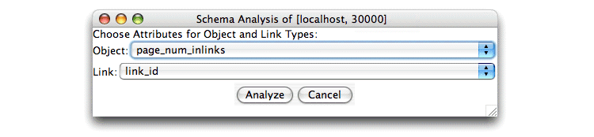

Schema analysis provides summary information about the objects and links in a database. To run a schema analysis, you need to tell Proximity which attributes identify the type of an object or link. Proximity then analyzes the database to determine the relationships among each type of object or link (as identified by these attributes) and other database entities.
Because MonetDB maximizes performance for joins at the expense of row-centric operations, schema analysis can be slow. Therefore Proximity performs schema analysis in a separate thread.
Exercise 4.6. Exploring the database schema:
Before beginning, make sure that you are serving the ProxWebKB database using Mserver. Start the Proximity Database Browser if it is not already running.
-
In the database actions list, click analyze schema. Proximity displays the Schema Analysis dialog.
 -
In the Object list, choose pagetype.
-
In the Link list, choose link_tag.
-
Click Analyze. Proximity performs the schema analysis.
A new window displays the trace of Proximity’s schema analysis processing. Because schema analysis runs in a separate thread, you can continue to use the Proximity Database Browser for other tasks while this process runs.
When the schema analysis is complete, Proximity displays a schema analysis report. The report shows the other object attributes associated with each type of object (as identified by the object “type” attribute you selected). For links, the report shows both the kinds of objects connected to each link type as well as the other link attributes associated with each type of link.

-
To save a copy of the schema analysis report, click Save. Proximity displays the Open dialog.
In the Save As box, enter a name for the file. Navigate to the directory in which you want to save the file and click Save. Proximity saves the report as an HTML file. To view the report, open the file in a web browser.
-
When you have finished examining the schema analysis report, click the window close button to close the report window.
If you want, you can perform additional analyses using different object and link attributes. Some analyses may be quite slow. In general, the more distinct values an attribute has, the slower the corresponding schema analysis will be.